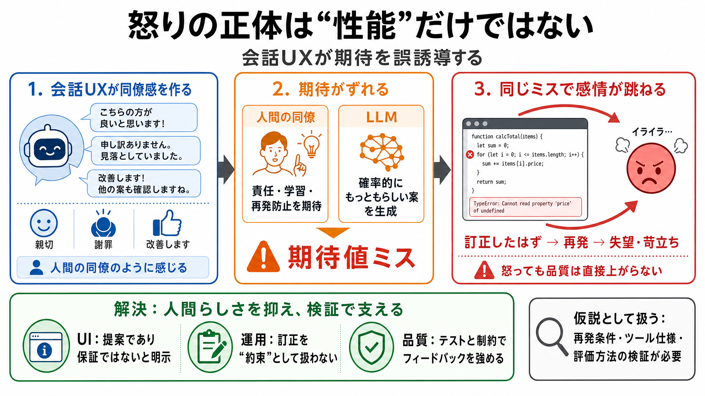

Coding Agents' Conversational UX Triggers User Frustration
In the May 6, 2026 essay on pscanf.com titled "The User Is Visibly Frustrated," the author reports recurring, strong ann…

コーディングエージェントの不満は「性能」だけではなく、チャットUIが作る“人間の同僚感（会話UX）”が期待を誤誘導する点にあります。
訂正後に同様の失敗が起きると、「直したはず」という感覚が裏切られ、失望・苛立ちが増幅されます。
エージェントが親切に見えるほど、人間同僚と同等の責任・学習・再発防止があると受け取りやすくなります（期待値ミス）。
UIが人間っぽく振る舞うほど、利用者の頭の中では“学習して改善する相手”として固定されます。しかし実際は、確率的な推論の結果です。
人間同僚なら再発を抑える理由や責任感が期待できますが、エージェントは同じ推論経路に戻り得ます。
人間相手だと“悪い言い方をしたくない”という抑制が働くことがありますが、エージェントではその心理コストが薄れやすいと述べられています。
訂正後のポストモーテムで“次に同じ失敗を避ける”ための具体指針が得られないと、冗長に感じて苛立ちが残ります。
解決として、過剰な人間っぽさを捨て“提案であり保証ではない”前提を固定すると、承認・却下に感情を振り回されにくくなると提案します。
根底は確率的生成です。同条件でも推論経路が変わり得て、ツール側の制約適用や履歴参照の精度が再発に影響すると述べられています。
丁寧な口調は協調的に感じさせますが、その結果として“責任・学習がある”という期待が生まれ、再発時に感情が強く揺れます。
怒りをぶつけても再発を直接止める効果がなく、カタルシスではなく“虚しさ”が残る、と指摘されています。
ただし文章は“人間っぽさが原因”と強く示唆しますが、再発の具体条件やツール仕様（訂正反映の仕組み等）が不明で、仮説として扱うのが安全です。
二択として“人間っぽさを完全に捨てる”より、責任・確実性・学習の有無をUI上で明確化し、出力は提案で保証ではないと運用側の認知を固定するのが現実的です。
本デッキは、ユーザー提供の本文（「コーディングエージェントが怒りたくなる理由――会話のUXが感情を誤作動させる」要約）に基づく圧縮整理です。
In the May 6, 2026 essay on pscanf.com titled "The User Is Visibly Frustrated," the author reports recurring, strong ann…
What really changed in AI in 2025, and what's next in 2026? In Time Tec software engineers and AI experts Dallen Pyrah a…
We traced recent reports of Claude Code quality issues to three separate changes. 1. On March 4, we changed Claude Code'…
Being the observer of thoughts and emotions - you are not your mind. Sounds like you might have read Eckhart Tolle or si…
# Anthropic Just Shipped the Code Reviewer That Catches What Humans Miss. ### 84% of large PRs get findings. Anthropic r…